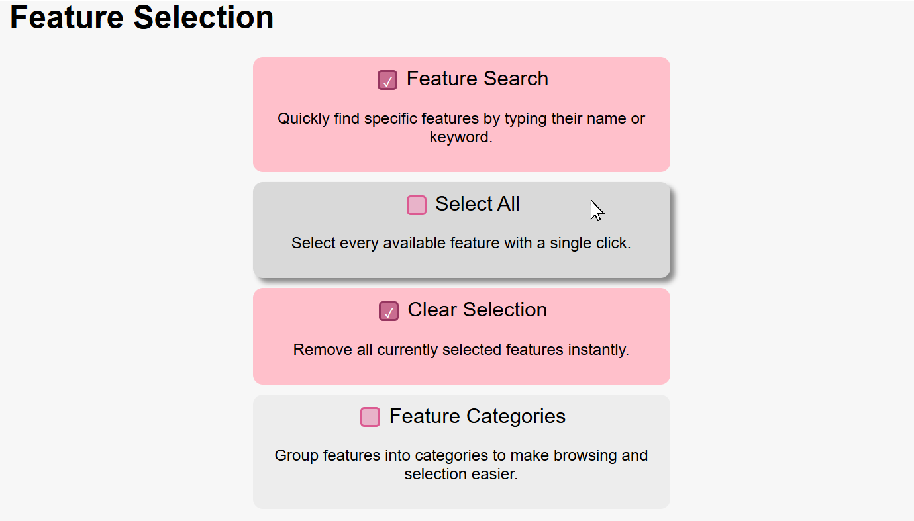

Feature Selection page
I made this with FreeCodeCamp. It doesnt change anything since it was just a CSS project but I really like how it looks and feels to interact with.

Here I will showcase some of the projects I have made through reasorces like CS50 and FreeCodeCamp. I dont have many screenshots but will take them and add them as I make them.
I made this with FreeCodeCamp. It doesnt change anything since it was just a CSS project but I really like how it looks and feels to interact with.
